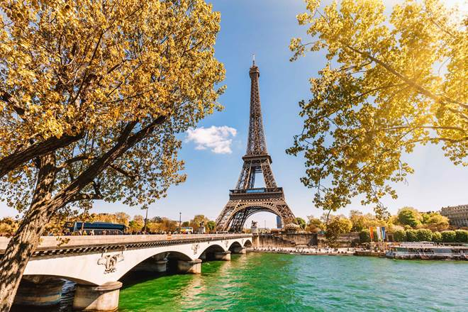
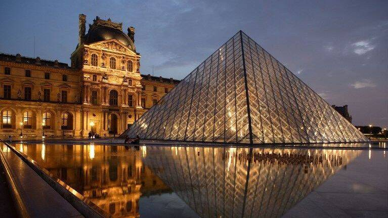

Une balade agréable
Pour vous balader en plein air, il y a plusieurs jardins et parcs que vous pourriez visiter. Nous avons le jardin du Luxembourg qui est un jardin ouvert au public, situé dans le 6e arrondissement de Paris. Il s’étend sur 23 hectares ( 21 ouverts au public ) agrémenté de parterres de fleurs et de sculptures. Aussi, nous avons le jardin de fleurs et de sculptures. Aussi, nous avons le jardin champs de Mars; il est public et il est l’un des plus grands espaces verts de Paris. Riche d’une histoire bicentenaire, le champ-de-Mars accueille les parisiens et touristes toute l’année autour d’un vaste ensemble d’activités.
Monuments
Nous avons en premier lieu la tour Eiffel qui est un symbole et monument de la capitale. On peut y accéder par escalier ou par ascenseur. Chaque étage à quelque chose d’intéressant à vous présenter.
Chaque passage dans la ville mérite une visite de Louvre, tant le plus grand musée de Paris recèle de trésors. La visite du musée est particulièrement agréable lors des nocturnes: moins fréquenté il offre une atmosphère différente et des vues imprenables sur la pyramide.
L’Arc de triomphe, un panorama unique sur les champs Élysée, la plus belle avenue du monde. Napoléon 1er l’a construit en l’honneur de la grande armée.

Shopping à Paris
Paris est l’une des villes les plus prisées pour faire du shopping, et plus particulièrement pour celles et ceux qui recherchent des articles de luxe et de mode des grands couturiers. Parmi les boutiques et rues commerçante qui valent le détour, nous avons les galeries Lafayette. Elles font parties des enseignes de grands magasins les plus visités au monde. Comme concurrent des galeries Lafayette nous avons l’enseigne de grand magasins Printemps qui propose les marques de mode les plus luxueuses.

Adapté aux enfants
Nous avons par exemple Disney land Paris. C’est un parc à thème de Walt Disney Company. Les détails sont soignés que l’on regarde les murs de main street, face aux costumes de tous les employés au cœur même des attractions. Les attractions sont diverses, s’adressant à toute catégorie de personne. La journée passée à Disney Paris est toujours savoureuse entre sourire jusqu’aux oreilles des enfants et gentils hurlements que l’on pousse dans les attractions les plus spectaculaires. Le soir venu, on rentre à l’hôtel ou à la maison fatigués, en se disant que tout cela en valait vraiment la peine.